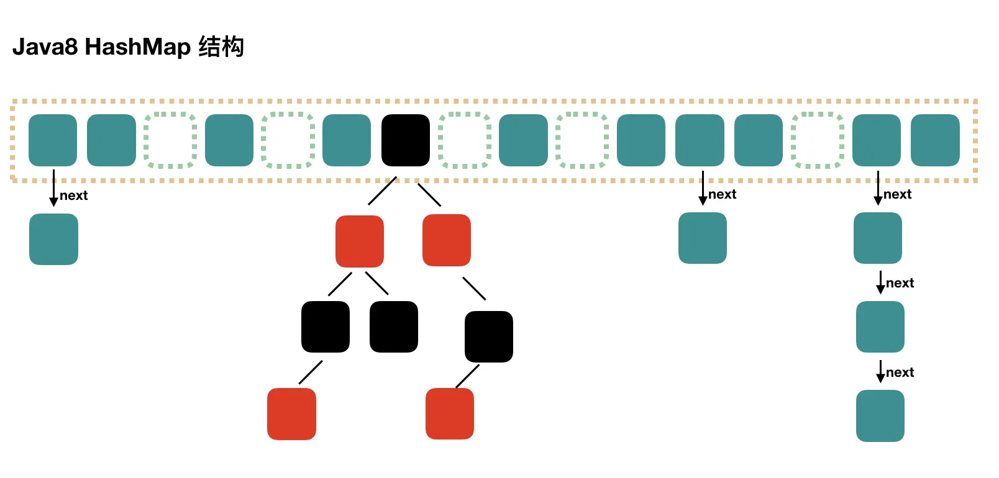
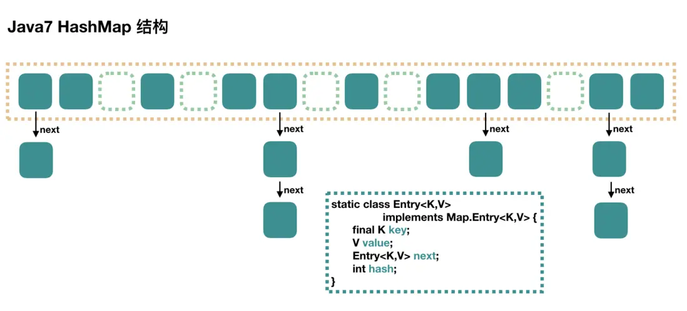
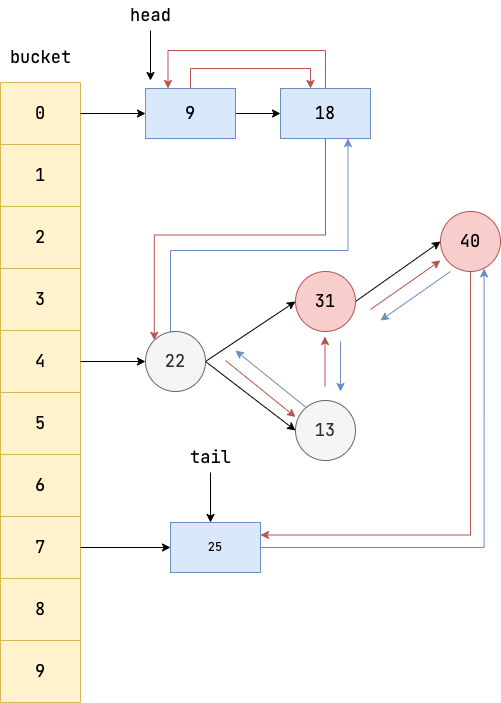

Java Map 完全指南
MAP，地图。
地图是依据一定的数学法则，使用制图语言，通过制图综合，在一定的载体上，表达地球上各种事物的空间分布、联系及变化状态的图形图像。——陕西测绘地理信息局
专家们测绘地球的三维地理信息，通过数学规则，将三维世界投影到地图上的二维平面。我们查阅手机上的电子地图，通过地图的二维信息进行导航，最终找到了三维世界的目的地。
与地图中二维坐标到三维地理信息的映射类似，计算机中的 Map，存储的是 key 和 value 的键值对映射；而地图最核心的功能——绘制和查找，对应 Map 接口中的 put 与 get。
一、Map 概述
Map 是 Java 集合框架中的重要接口，用于存储键值对（Key-Value Pairs）。每个键映射到一个值，通过键可以快速定位到对应的值。
1.1 核心特征
| 特征 | 说明 |
|---|---|
| 键唯一性 | Map 中不允许重复键；若多次添加同一键，后一次会覆盖前一次的值 |
| 值可重复性 | 不同的键可以指向相同的值 |
| 无序性 | Map 不保证元素的存取顺序与插入顺序一致，不同实现类在存储和迭代时可能采用不同顺序 |
| 键值关联性 | 键和值一一对应，通过键可快速定位值 |
1.2 典型应用场景
- 缓存：用户 ID → 用户对象
- 配置管理：配置项 → 配置值
- 数据分组：类别 → 数据列表
- 计数统计：元素 → 出现次数
二、核心 API
2.1 基本操作
| 方法 | 功能描述 |
|---|---|
put(K key, V value) |
添加或更新键值对 |
get(Object key) |
根据键获取值，不存在返回 null |
remove(Object key) |
根据键移除键值对 |
containsKey(Object key) |
判断是否包含指定键 |
containsValue(Object value) |
判断是否包含指定值 |
size() |
返回键值对数量 |
isEmpty() |
判断是否为空 |
clear() |
清空所有键值对 |
2.2 遍历方式
Map<String, Integer> map = new HashMap<>();
map.put("Alice", 95);
map.put("Bob", 88);
map.put("Charlie", 92);
// 方式一：遍历键集 keySet
for (String key : map.keySet()) {
System.out.println(key + " : " + map.get(key));
}
// 方式二：遍历值集 values
for (Integer value : map.values()) {
System.out.println(value);
}
// 方式三：遍历键值对 entrySet（推荐）
for (Map.Entry<String, Integer> entry : map.entrySet()) {
System.out.println(entry.getKey() + " : " + entry.getValue());
}
// 方式四：Java 8+ forEach
map.forEach((key, value) -> System.out.println(key + " : " + value));
推荐使用 entrySet() 的原因：
- 性能更优：
keySet()需要额外调用get()查找值，可能导致多次哈希计算 - 功能更强：支持通过
setValue()直接修改值
三、HashMap 实现原理
HashMap 是最常用的 Map 实现，基于哈希表实现，提供 O(1) 的平均查找性能。
3.1 底层数据结构
HashMap 采用数组 + 链表 + 红黑树的组合结构：
- 数组：存储键值对的主体结构，通过哈希值定位索引
- 链表：解决哈希冲突，相同索引的元素以链表形式串联
- 红黑树：Java 8 引入，当链表过长时转换，提升查询效率

3.2 存储流程
put(key, value) 的执行过程：
- 计算哈希值：
hash = hashCode() ^ (hashCode() >>> 16) - 定位数组索引：
index = (n - 1) & hash - 处理冲突：
- 若该位置为空 → 直接存放
- 若该位置已有元素 → 以链表或红黑树形式处理冲突
3.3 哈希冲突解决
当不同 Key 映射到相同索引位置时，发生哈希冲突。HashMap 采用链地址法解决：
链表场景：冲突较少时，元素以链表形式串联

红黑树场景：Java 8 优化，当链表长度 ≥ 8 且数组容量 ≥ 64 时，链表转换为红黑树
| 结构 | 查找复杂度 | 适用条件 |
|---|---|---|
| 链表 | O(n) | 链表长度 < 8 |
| 红黑树 | O(log n) | 链表长度 ≥ 8 且数组容量 ≥ 64 |
关键判断逻辑（putVal 方法）：
// 遍历链表，binCount 为链表长度计数
for (int binCount = 0; ; ++binCount) {
if ((e = p.next) == null) {
p.next = newNode(hash, key, value, null);
// 链表长度 >= 8 时，尝试树化
if (binCount >= TREEIFY_THRESHOLD - 1)
treeifyBin(tab, hash);
break;
}
// ...
}
treeifyBin 方法中的容量检查：
final void treeifyBin(Node<K,V>[] tab, int hash) {
int n, index; Node<K,V> e;
// 数组容量 < 64 时，优先扩容而非转红黑树
if (tab == null || (n = tab.length) < MIN_TREEIFY_CAPACITY)
resize();
else if ((e = tab[index = (n - 1) & hash]) != null) {
// ... 转换为红黑树
}
}
3.4 扩容机制
| 参数 | 默认值 | 说明 |
|---|---|---|
| 初始容量 | 16 | 底层数组初始大小 |
| 负载因子 | 0.75 | 触发扩容的阈值比例 |
| 扩容阈值 | 容量 × 0.75 | 元素超过此值时扩容为 2 倍 |
触发时机：每次 put 操作后，检查元素数量是否超过阈值：
// putVal 方法末尾
++modCount;
// 元素数量 > 阈值时触发扩容
if (++size > threshold)
resize();
为何负载因子是 0.75：空间利用率与哈希冲突率的平衡点。过小浪费空间，过大冲突增多。
3.5 线程安全性
HashMap 非线程安全。多线程环境下可能出现：
- 数据丢失或覆盖
- 扩容时数据不一致
- Java 7 中可能形成循环链表导致死循环
多线程场景应使用 ConcurrentHashMap。
四、Map 实现类对比
Java 提供了多种 Map 实现，各有特点，适用于不同场景。
4.1 特性对比
| 特性 | HashMap | LinkedHashMap | TreeMap | ConcurrentHashMap |
|---|---|---|---|---|
| 顺序 | 无序 | 插入/访问顺序 | 键自然排序 | 无序 |
| 查找性能 | O(1) | O(1) | O(log n) | O(1) |
| 线程安全 | 否 | 否 | 否 | 是 |
| 底层结构 | 哈希表 | 哈希表 + 双向链表 | 红黑树 | 哈希表 + CAS/synchronized |
4.2 HashMap
基于哈希表实现，是最常用的 Map 实现。
特点：
- O(1) 平均查找、插入、删除性能
- 不保证顺序
- 非线程安全
适用场景：大多数单线程场景的默认选择。
4.3 LinkedHashMap
在 HashMap 基础上增加双向链表，维护插入或访问顺序。

特点：
- 保持插入顺序（默认）或访问顺序（
accessOrder=true） - O(1) 性能，略慢于
HashMap - 支持按访问顺序淘汰，适合实现
LRU缓存
为何能实现 LRU？
LinkedHashMap 内部维护双向链表记录访问顺序：
- 访问时移动：
get()或put()后，元素移到链表尾部（最近访问） - 插入时淘汰：
removeEldestEntry()返回true时，移除链表头部（最久未访问）
访问 B：head → A → B → C → tail 变为 head → A → C → B → tail
插入 D：head → A → C → B → tail 变为 head → C → B → D → tail（A 被淘汰）
适用场景：需要保持插入/访问顺序，如缓存实现。
4.4 TreeMap
基于红黑树实现，键按自然顺序或自定义比较器排序。

特点：
- 键有序（自然顺序或自定义比较器）
- O(log n) 查找、插入、删除性能
- 不允许
null键 - 支持范围查询和最值获取
范围查询示例：
TreeMap<Integer, String> map = new TreeMap<>();
map.put(85, "Bob");
map.put(95, "Alice");
map.put(90, "Charlie");
map.firstKey(); // 85（最小键）
map.lastKey(); // 95（最大键）
map.subMap(85, true, 90, true); // 85 ≤ key ≤ 90
适用场景：需要按键排序、范围查询或获取最值。
4.5 ConcurrentHashMap
线程安全的 HashMap，采用 CAS + synchronized 实现高效并发。

特点：
- 线程安全，高并发性能优异
- 不允许
null键和null值 - 迭代器具有弱一致性，不抛出
ConcurrentModificationException - Java 8 采用 CAS + synchronized，比 Java 7 分段锁更高效
适用场景：多线程环境下的首选 Map 实现。
4.6 选择指南
需要线程安全？ ──是──→ ConcurrentHashMap
│
否
↓
需要保持顺序？ ──是──→ LinkedHashMap
│
否
↓
需要键排序？ ──是──→ TreeMap
│
否
↓
HashMap（默认）
五、最佳实践
5.1 初始化指定容量
已知大小时，指定初始容量避免扩容：
int expectedSize = 100;
Map<String, String> map = new HashMap<>((int)(expectedSize / 0.75f) + 1);
5.2 使用 computeIfAbsent
// 旧方式
if (!map.containsKey(key)) {
map.put(key, new ArrayList<>());
}
map.get(key).add(value);
// 推荐
map.computeIfAbsent(key, k -> new ArrayList<>()).add(value);
5.3 自定义 Key 重写 equals 和 hashCode
public class User {
private String id;
@Override
public boolean equals(Object o) {
if (this == o) return true;
if (o == null || getClass() != o.getClass()) return false;
return Objects.equals(id, ((User) o).id);
}
@Override
public int hashCode() {
return Objects.hash(id);
}
}
六、常见陷阱
陷阱 1：迭代时修改
// 错误：ConcurrentModificationException
for (String key : map.keySet()) {
map.remove(key);
}
// 正确
map.keySet().removeIf(key -> condition);
陷阱 2：可变对象作为 Key
List<String> key = new ArrayList<>(List.of("test"));
map.put(key, "value");
key.add("changed"); // Key 被修改，hashCode 变化
map.get(key); // 返回 null！
陷阱 3：忽视哈希冲突
劣质的 hashCode() 实现会导致大量冲突，退化为链表查找。应确保哈希值均匀分布。
七、总结
| 实现类 | 特点 | 适用场景 |
|---|---|---|
| HashMap | 无序、高性能 | 单线程通用场景 |
| LinkedHashMap | 有序 | 需要保持插入/访问顺序 |
| TreeMap | 键有序 | 需要排序、范围查询 |
| ConcurrentHashMap | 线程安全 | 多线程环境 |
掌握 Map 的核心概念与各实现类特性，能够帮助你在实际开发中做出正确的选择。